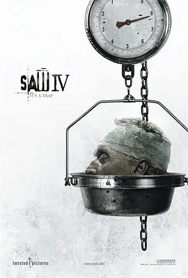

7.8
电锯惊魂4
Saw IV
2007
美国
评分 7.8
导演:
达伦·林恩·鲍斯曼
演员:
托宾·贝尔 / 科斯塔斯·曼迪勒 / 斯科特·帕特森 / 贝茜·拉塞尔 / 雷瑞克·本特
类型:
恐怖,悬疑,惊悚
剧情简介
午夜的街区在雨声中显得格外沉寂，而SWAT指挥官瑞格被突如其来的绑架打破了这种平静。他从昏迷中醒来时，浑身被绳索勒出的痕迹仍隐隐作痛，四周是陈旧的水泥墙和铁锈满布的机关装置。房间里弥漫着湿冷的气味，仿佛每一次呼吸都预示着新的威胁。他面前播放着竖锯留下的录音，提醒他必须在限定时间内完成一系列极端考验，每一次犹豫都可能让某个无辜者被迫付出生命。作为长期奋战在前线的指挥官，瑞格习惯于以行动解决危机，而这一次，他却被迫质疑自己的“救人本能”。竖锯布置的关卡一步步推动他走向心理的边缘，让他不仅面对陌生人，也面对自己无法放手的执念。每一次选择犹如踩在薄冰上，既考验他的判断，也放大了他心底的脆弱。与此同时，在外调查此案的FBI探员斯琼姆与霍夫曼警探持续追查线索。解剖室的冷光下，一具具尸体成为竖锯计划的碎片，他们试图从撕裂的皮肤与机械痕迹中还原真相。随着更多过往被揭露，竖锯为何踏入黑暗的起因逐渐明朗，但新的疑点也不断冒出，让人怀疑“幕后之手”远不止一个。时间不停逼近终点，瑞格在机关之间穿梭，每跨出一步都仿佛要被拉向深渊。整个城市在这场连锁游戏的阴影下变得压抑，而各种命运也在无形中被紧紧牵系。等到所有真相交汇的时刻，人们才意识到这场游戏远不像表面那么简单，而竖锯的“遗产”，正悄悄延伸向更深处的黑暗。